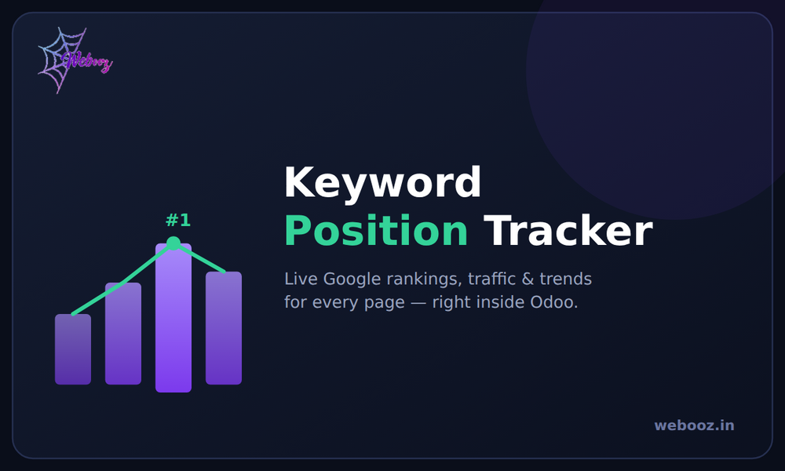
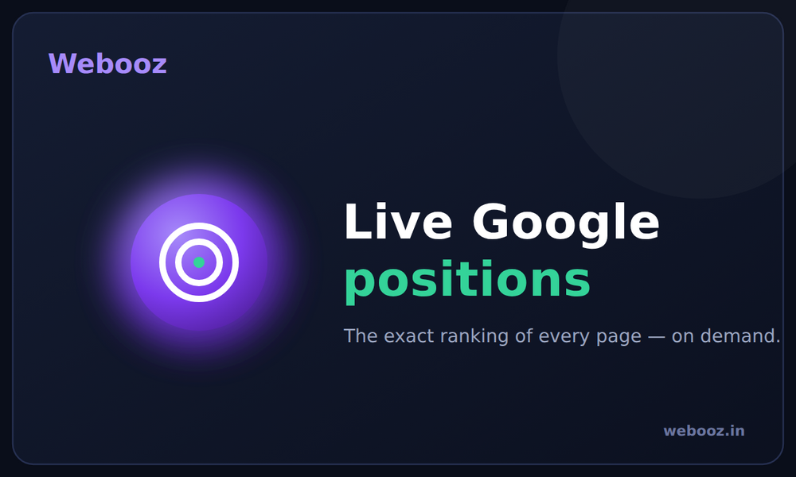
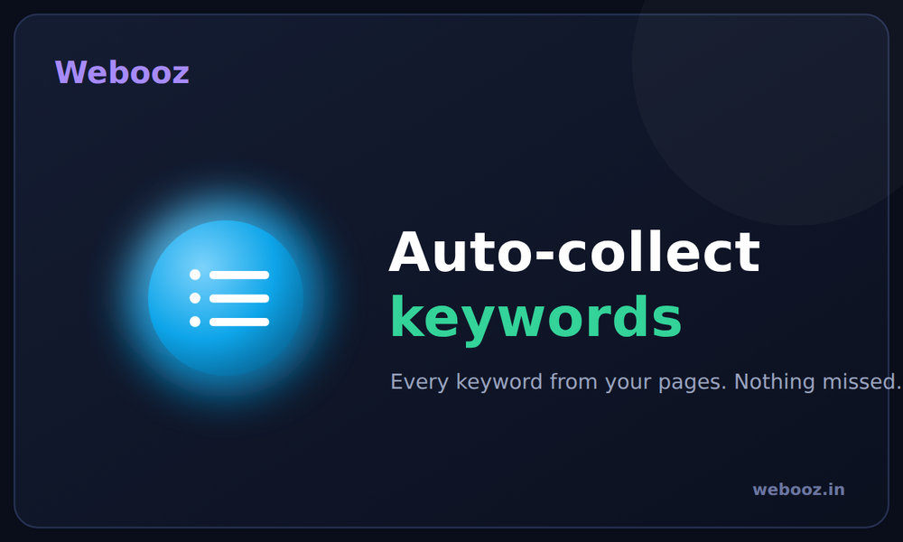
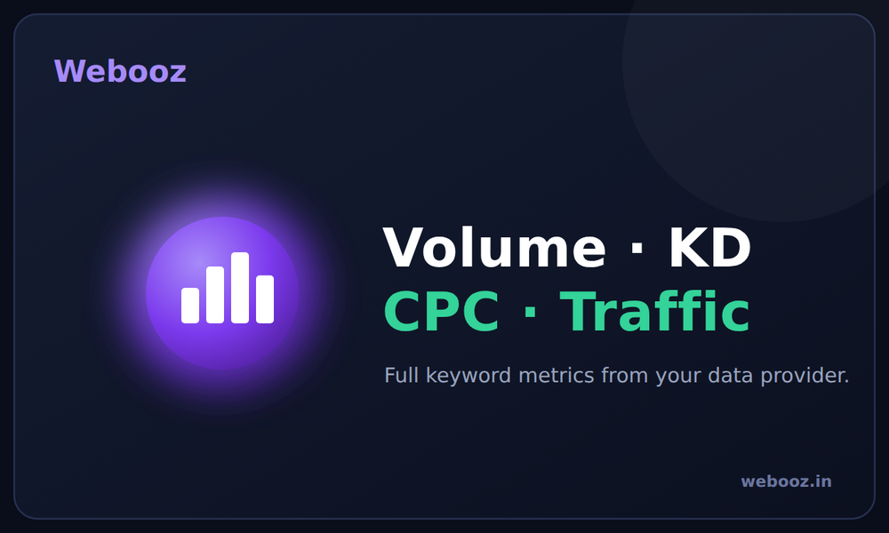
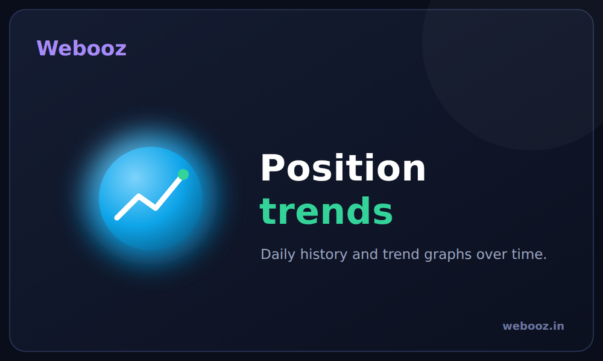
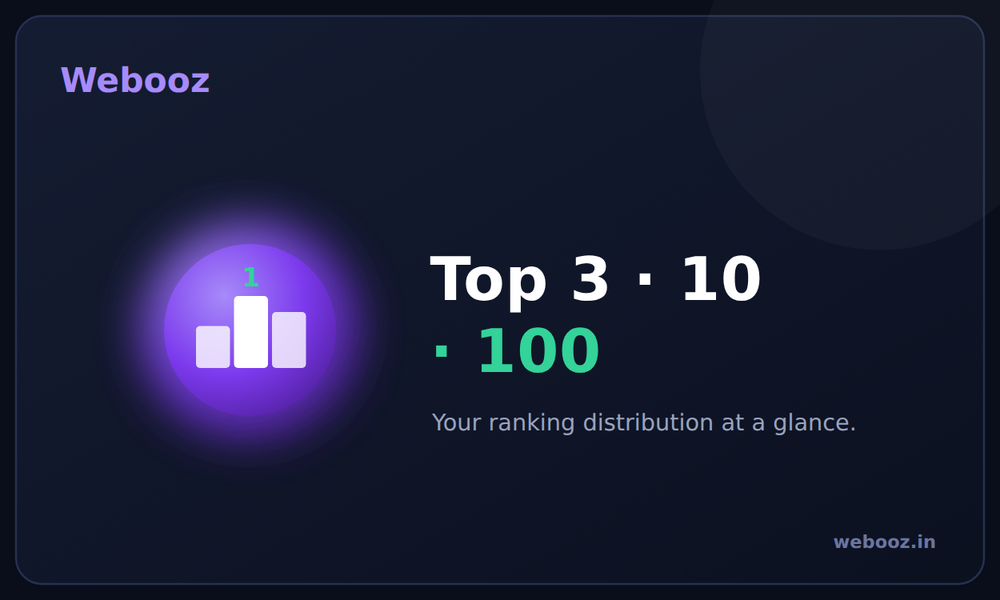

Keyword Position Tracker collects every keyword from your website pages, then shows the exact Google ranking of the page that targets it — with the change since the last check, search volume, difficulty, CPC, estimated traffic, the ranking URL and SERP features. It keeps daily history so you watch the trend over time, and refreshes on a schedule and on demand.
Version 19.0.1.0.0 · Odoo 19 · LGPL-3 · by Webooz





One click reads every focus keyphrase and related keyphrase (from SEO Coach) and the standard website meta keywords across your pages, blog posts, products and events — and starts tracking them all.
A Refresh button fetches the latest positions on demand, opening the dashboard auto-refreshes any keyword that has gone stale, and a daily scheduled job keeps the history up to date. (Google blocks scraping, so checks run on a schedule through an official API — exactly how every professional rank tracker works.)
No fake numbers and no scraping. You connect a source once in Settings, and the dashboard shows every column that source provides:
| Source | Gives you |
|---|---|
| Google Search Console (free, official) | Exact position, clicks, impressions, CTR for your own site's keywords |
| DataForSEO / SerpApi (paid) | Position for any keyword, plus volume, difficulty and CPC |
Built by Webooz · webooz.in · Support: akash00.hit@gmail.com